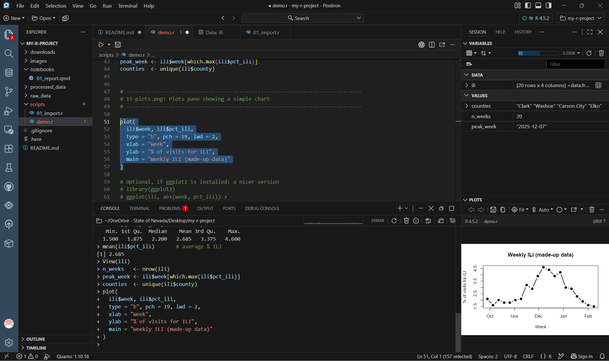
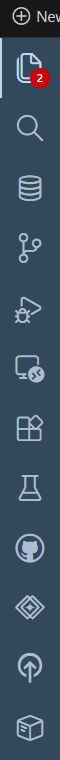
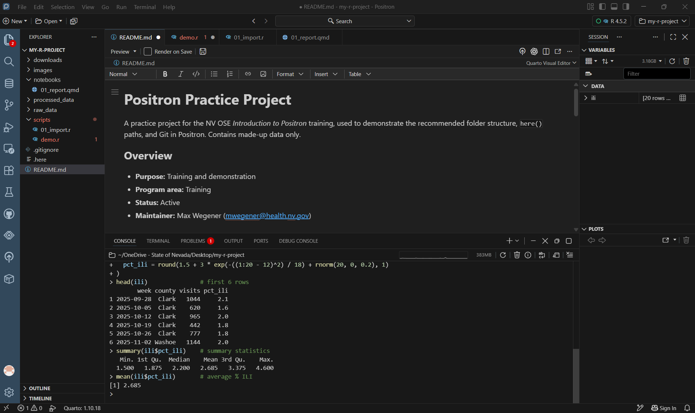
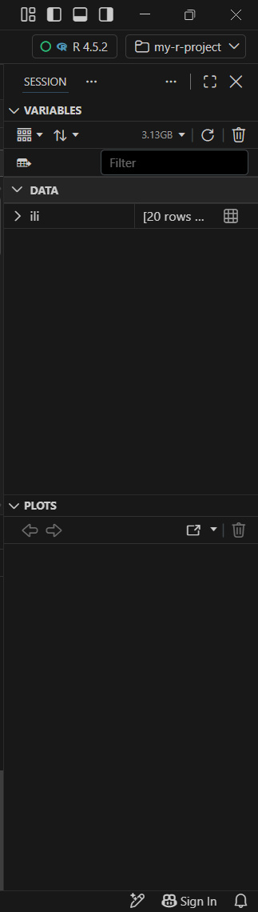
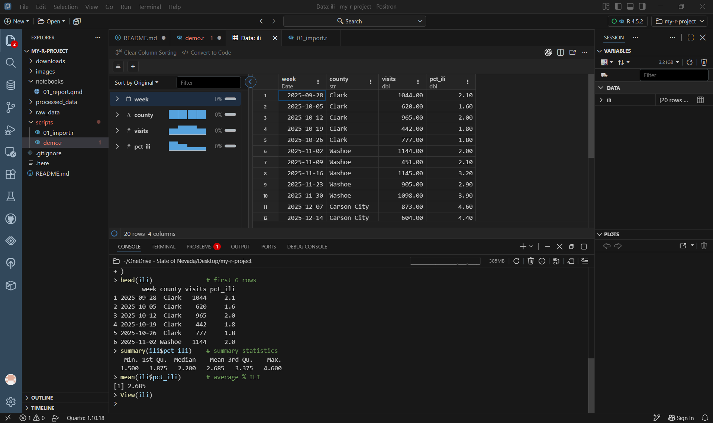
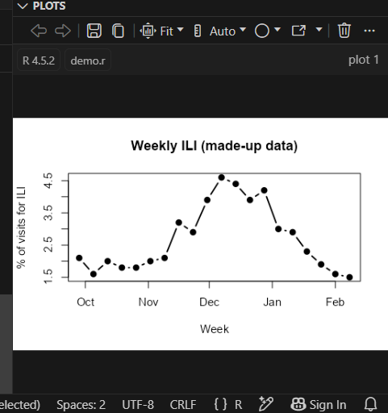
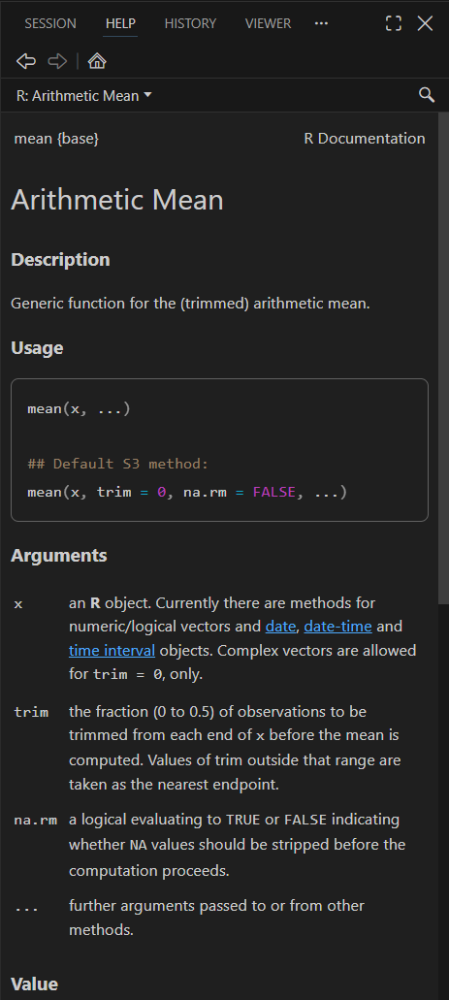
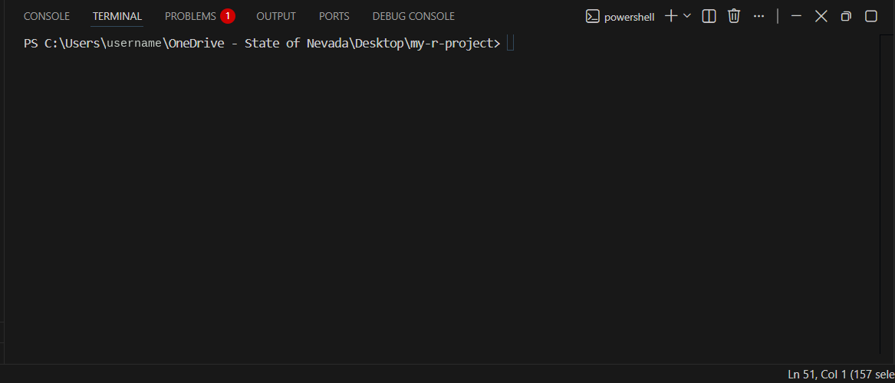
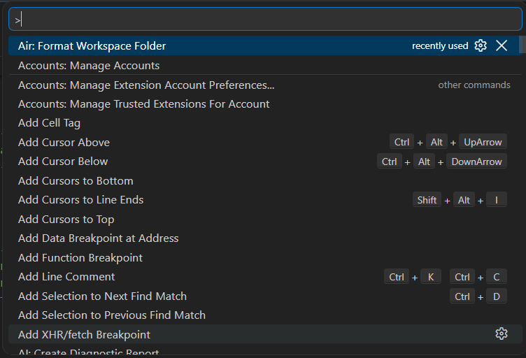

Lesson 5: The panes
The layout

| Area | Where | What it’s for |
|---|---|---|
| Activity bar | Far left, column of icons | Switch the side bar between Explorer, Search, Source Control, Extensions, and more |
| Side bar | Left | Shows whatever you picked in the activity bar, usually the Explorer |
| Editor | Center top | Your scripts and documents, one tab per file |
| Panel | Center bottom | Console, Terminal, Problems, Output |
| Session | Right top | Variables in your R or Python session |
| Plots / Help / Viewer | Right bottom (tabs) | Charts, help pages, and rendered web content |
Drag the borders between areas to resize them. View → Appearance shows or hides each part.
Coming from RStudio or VS Code?
| Positron | RStudio equivalent | VS Code equivalent |
|---|---|---|
| Editor | Source pane | Editor |
| Console | Console | (Python/R extension terminals) |
| Terminal | Terminal tab | Terminal |
| Variables | Environment tab | (Jupyter Variables) |
| Data Explorer | View() data viewer |
(Data Wrangler extension) |
| Plots | Plots tab | (Plot viewer from extensions) |
| Help | Help tab | (none) |
| Viewer | Viewer tab | (Simple Browser) |
| Explorer | Files tab | Explorer |
| Source Control | Git tab | Source Control |
| Folder (top right) | Project menu (.Rproj) |
Open Folder |
| Interpreter picker (top right) | R version in Global Options | Python interpreter picker |
| Command Palette (Ctrl + Shift + P) | (none; Tools menu) | Command Palette |
The activity bar

From the top, the main icons are Explorer, Search, Data Connections (databases), Source Control (Git), Run and Debug, Remote Explorer, and Extensions. Icons below those come from extensions. Hover over any icon to see its name and shortcut.
Console
Where R or Python runs. Type a command and press Enter, or send lines from a script with Ctrl + Enter.

- ↑ brings back previous commands.
- The folder path at the top of the Console is the working directory.
- The ↻ button restarts the session; the 🗑 button clears the Console.
Variables and the Data Explorer
The Variables pane lists everything in your session: data frames under Data, and single values under Values.

Click the table icon next to a data frame (or run View(ili)) to open it in the Data Explorer:

- The left side summarizes each column: type, missing values, and a small chart.
- Click a column header to sort; use Filter to filter rows.
- Convert to Code writes the R code for your sort and filter.
Plots
Charts appear in the Plots pane. Use the arrows to flip between earlier plots, and the icons to save, copy, or open a plot in a new window.

Help
Run ? followed by a function name, like ?mean, to open its help page in the Help tab.

Terminal
The Terminal tab (next to Console) is a command line: PowerShell by default on Windows. Use it for Git commands, quarto render, or pip install. It does not run R code directly.

Command Palette
Ctrl + Shift + P opens the Command Palette: a searchable list of every command in Positron. If you can’t find a menu option, search for it here.

sign, above a list of commands such as Accounts: Manage Accounts, Add Cursor Above with its shortcut Ctrl+Alt+UpArrow, and Add Line Comment with Ctrl+K Ctrl+C.">Try typing theme, new session, or preview.